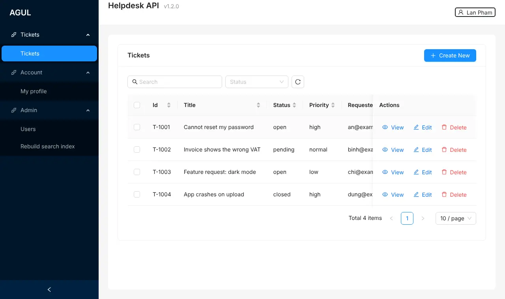
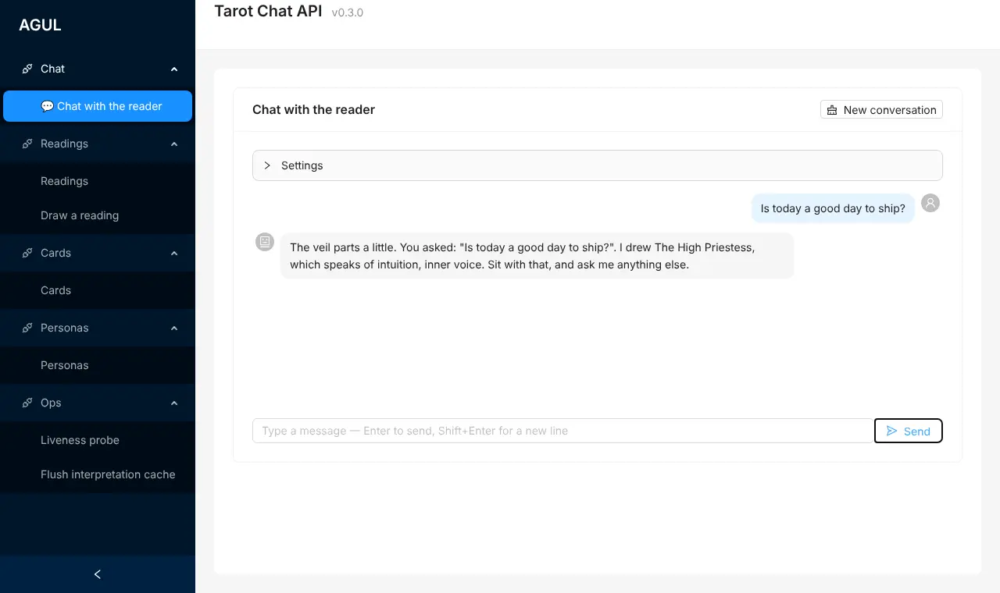
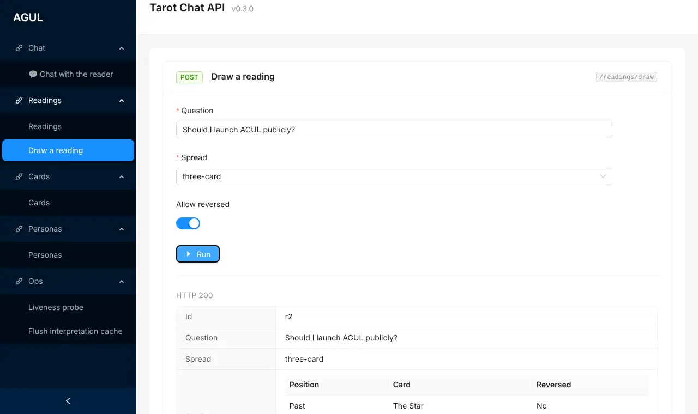
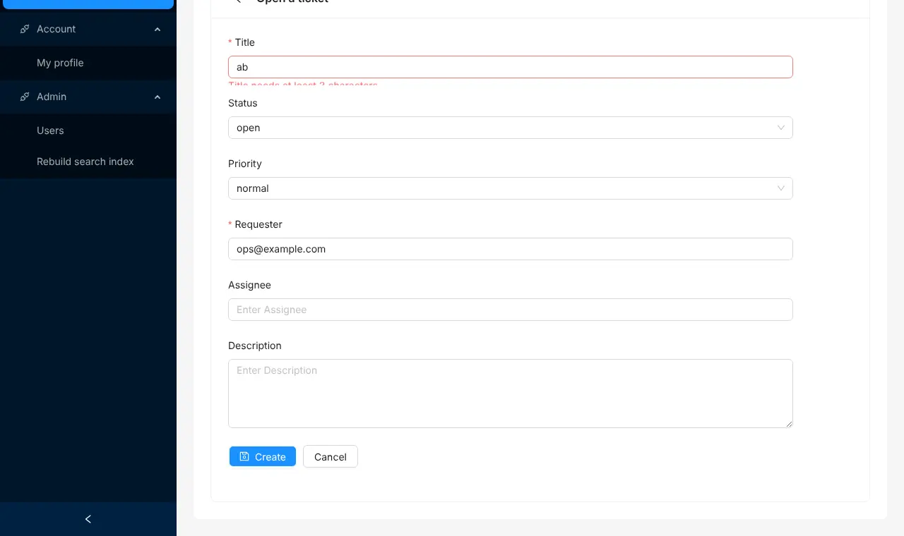
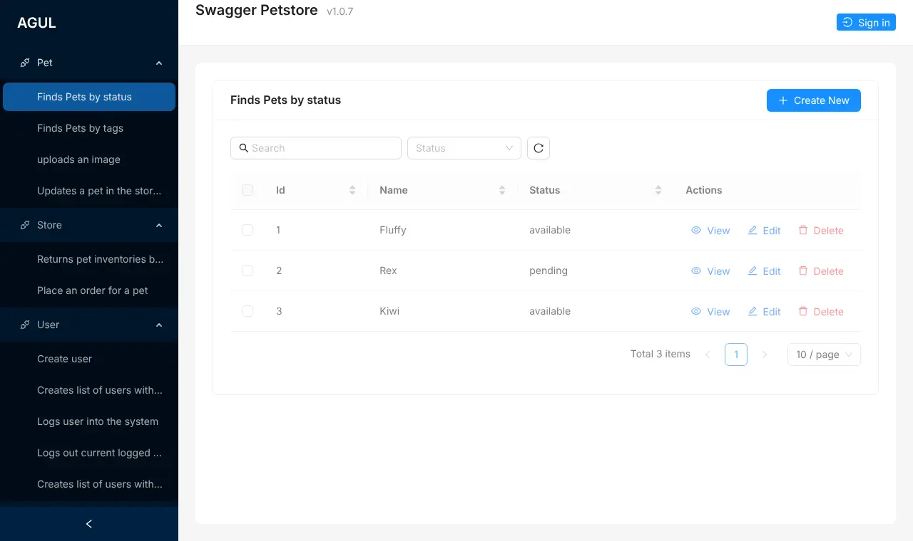
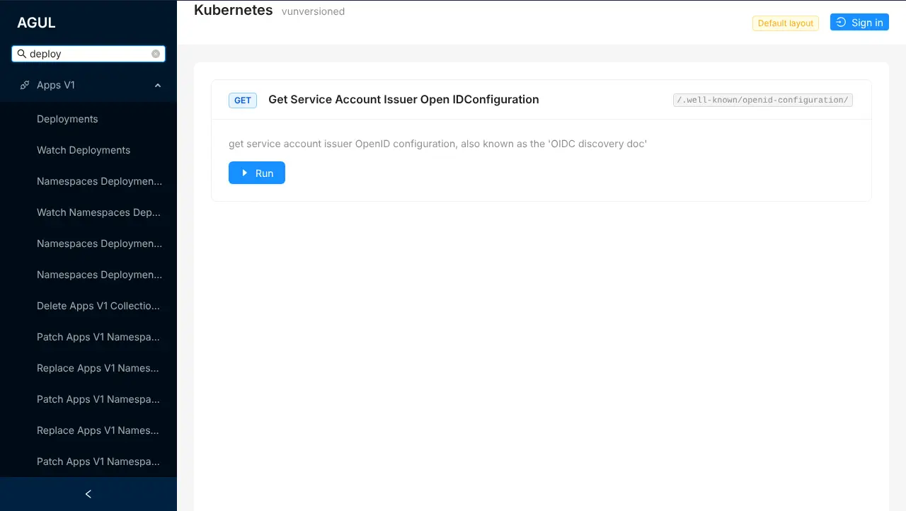

Your OpenAPI spec is already an admin UI.
AGUL reads an OpenAPI or Swagger spec and renders a working React app: lists, details and forms for every resource, forms for actions, streaming chat for AI endpoints — with sign-in and role-based access from the spec's own security rules.
$ npm install @ai-kit/agul-react
Every operation gets a page
No code generation step and no hand-written screens. Change the spec, the UI follows.
CRUD from resources
Endpoints are grouped into resources: list with search, filters and pagination, detail, create and edit forms, single and bulk delete.
Actions
Anything that isn't record management becomes a form with its result shown as a table, a record, text — or a live stream.
Streaming chat
Message-in, reply-out endpoints get a conversation UI with history, session ids and SSE / NDJSON streaming (OpenAI and Anthropic chunk shapes).
Sign-in from the spec
API key, Basic, Bearer, OAuth 2 (code + PKCE, password, client credentials) and OpenID Connect, with token refresh and a prompt on 401.
Roles and scopes
Pages, menu entries and buttons the user may not use disappear, from OAuth scopes in security and x-agul-roles.
LLM-decided layout
Optionally let an LLM or your own decision API choose CRUD, action, chat or hidden per operation. Invalid answers are dropped; rules stay the fallback.
Agent-ready
An MCP server (@ai-kit/agul-mcp) lets coding agents turn a spec into routes, menu and an embed snippet in one tool call.
Tested on real APIs
Measured on 19 public specs — Stripe, GitHub, Kubernetes, Jira, Twilio, NetBox… — 9,000+ operations, 519 resources with full CRUD.
One component
Point it at a spec. Mount it at the root, or inside your own router under a splat route.
import { AGULRenderer } from '@ai-kit/agul-react'; export default function Admin() { return ( <AGULRenderer specUrl="/openapi.json" auth={{ oauth: { clientId: 'admin-ui' } }} /> ); } // inside an existing app: <Route path="/admin/*" element={<AGULRenderer spec={spec} />} />
Tune it in the spec
Spec extensions win over everything else.
"/admin/reindex": { "post": { "x-agul-roles": ["admin"], "x-agul-view": "action" } }, "/chat": { "post": { "x-agul-view": "chat", "x-agul-chat": { "messageField": "message" } } }
How each page is decided
Three layers, highest priority first. The rule-based layout renders immediately; a provider can refine it.
x-agul-view, x-agul-chat, x-agul-roles — never overridden.What it looks like
All screenshots are from the demo below — the same build that runs on this site.



securitySchemes; opens itself on a 401.
minLength, pattern, format enforced; server 422s land on fields.

Try the demo
The sample APIs run in your browser (a service worker answers their requests), so nothing leaves your machine.
Helpdesk (secured) →
OpenID Connect sign-in with PKCE. Sign in as Lan (admin), Minh (agent) or Vy (viewer) and watch the UI change.Tarot chat →
CRUD, an action with a nested result, and a streaming chat — one spec.Swagger Petstore →
The classic, against the public Petstore API (results depend on its uptime).Plugins + wizard →
Custom field widgets and a multi-step form from schema extensions.Or paste any spec URL into the demo's toolbar (the API must allow cross-origin calls; the Cloudflare deployment adds a proxy).
Where it fits
An honest comparison with tools you might already use.
| UI comes from | Good at | Pick AGUL when | |
|---|---|---|---|
| API Platform Admin | Hydra / OpenAPI schema, on react-admin | Mature component ecosystem | Your specs are messy real-world ones, or you need actions and chat too |
| react-admin / Refine guessers | Data the API returns | Scaffolding code to edit | You want no generated code to maintain |
| Retool / ToolJet / Appsmith | A person building screens | Visual builders, many connectors | The spec should be the source of truth and the UI embeds in your app |
| Generative UI (CopilotKit, A2UI…) | An LLM, per conversation turn | Free-form, novel UI | You need predictable, complete CRUD at one LLM call per spec — or none |